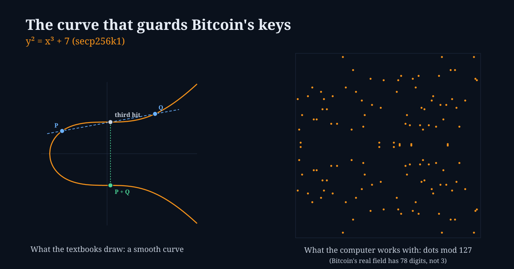

One Door, Two Keys: What a Quantum Computer Would Actually Do to Bitcoin
OCTOBER 8, 2026

This morning Matthew Green, the Johns Hopkins cryptographer who has spent a career being politely alarmed on the internet's behalf, replied to a thread with one line: "I think we might lose public key cryptography." I can't see what he was answering, so I won't pretend to know what he meant. But I know who heard it. Every Bitcoiner reading that sentence silently swapped in "my coins", and the group chats lit up.
So here is the version with the drama taken out and the arithmetic left in. I was asked three things, and they make a good outline: what is the math actually protecting, doesn't Bitcoin use two signature schemes (and would an attacker have to break both?), and how worried should anyone be? The short answers: a very specific lock, no, it would not need to break both, and "worried about the transition, not about the end of cryptography."
The Lock: A Curve That Turns Into Dots
Bitcoin's keys live on a curve called secp256k1, whose equation is about as unglamorous as math gets: y² = x³ + 7. Draw it over ordinary numbers and you get the smooth, slightly smug shape in the picture above. The trick that makes it a cryptosystem is a way of adding two points on it. Draw a straight line through the two, find where it meets the curve a third time, and flip that point over the horizontal axis.
Add a point to itself, 256 times in the right pattern, and you can reach "k times the starting point" for a k that is a 256-bit number, in the time it takes to blink. Your private key is that number k. Your public key is the point it lands on. Anyone can check that a point is where it should be. Nobody can easily look at the point and say how many hops it took.
Computers don't use the smooth curve, though. They work in a finite field, where the numbers wrap around like a clock, and that makes the smooth line shatter into scattered dots. The picture below is the real thing in miniature: the same equation, on a clock with 127 hours instead of one with 78 digits. The numbered dots are G, 2G, 3G and so on, one addition apart each, and they hop around the grid with no visible order.
That asymmetry, easy forward and hopeless backward, is the entire security argument. It's called the elliptic-curve discrete logarithm problem, and the best classical attack needs roughly 2¹²⁸ steps. Quantum computers matter because of a 1994 algorithm by Peter Shor that doesn't take 2¹²⁸ steps. It takes a polynomial number, if you can build a machine big and clean enough to run it.
"Doesn't Bitcoin Use Two? Wouldn't They Have to Crack Both?"
Good instinct, and it would be great news if it were true. It isn't. Bitcoin does have two signature schemes: ECDSA from the beginning in 2009, and Schnorr (BIP-340) added with the Taproot upgrade in 2021. But they are not layers. They are two different ways of proving you know k, and both of them run on the same curve with the same hard problem underneath. Find k from the public point and you can forge either one. Shor's algorithm doesn't care which signature you wrapped around the key.
The thing that really is a second lock is the hash sitting in front of most
addresses. If your coins sit at an address that starts with 1 or bc1q,
the blockchain doesn't hold your public key at all, only a 160-bit fingerprint of it. A quantum
computer helps against hashes too, but only by a square root (Grover's algorithm), which turns
a hopeless job into a merely hopeless one. That fingerprint is why a big chunk of Bitcoin is
quietly protected today. It is not protected by the curve.
What's Actually Exposed
The fingerprint comes off the moment you spend. A transaction has to reveal the public key so others can verify the signature, and from that instant the key is out in the open. This gives two different attack shapes, which Google's authors separate in their paper:
- At-rest exposure: coins whose public key is already on the chain and will stay there. That covers the earliest pay-to-public-key outputs (many of the 2009 and 2010 mining rewards), Taproot outputs, and any address that has ever been reused. An attacker has all the time in the world.
- On-spend exposure: a transaction sitting in the mempool, waiting for a block, with its key now visible. The attacker has to derive the key and get a competing transaction confirmed first, before the roughly ten-minute block interval runs out.
Estimates of the at-rest pile run around 6.9 million BTC, about a third of everything mined, including the roughly million coins attributed to Satoshi. That's an unusual position for an asset sold partly as "digital gold": a third of the vault sits behind glass that is thick today and of unknown thickness tomorrow. For the full supply picture see how many bitcoins there really are, and the live numbers are on the Bitcoin Board.
How Far Away Is the Machine?
Here's where the drama and the data part ways. The largest physical-qubit arrays in 2026 are about 1,000 to 1,200 qubits, and what they can do reliably as logical qubits is in the tens. Bitcoin's curve needs, by Google's March 2026 estimate, fewer than 1,200 to 1,450 logical qubits, which on superconducting hardware means fewer than half a million physical ones, running for minutes. That paper, by Babbush, Gidney, Boneh, Drake and colleagues, cut the earlier resource estimate by roughly twenty times, and Google published a zero-knowledge proof of its claim rather than the attack circuits themselves.
The other recent number comes from IonQ, in September: about 19,400 trapped ions, but around 26 days per attempt. Slower machines like that can only attack at-rest coins; they cannot race a ten-minute block. So which hardware wins matters as much as how many qubits it has.
I'd read this chart two ways at once. One: the trend is steady and runs in the wrong direction for the defender. The headline estimates have fallen several-fold in the last few years. Two: from the top bar to the second bar is still a gap of more than one order of magnitude in qubits, and the headline assumptions (error rates, decoding, running for days without a fault) are exactly the parts that haven't been built at scale. Both are true. The sensible posture is the one Google itself adopted for its own systems, which is to migrate on a schedule (it has said 2029) rather than waiting to see the machine.
So What Is Bitcoin Doing About It?
As of today, the answer is "discussing it carefully," which in Bitcoin means slowly. As reported, there are three live ideas:
- BIP-360 (Pay-to-Merkle-Root, P2MR). A new output type that works like Taproot with the quantum-vulnerable key path taken out, so a script is committed to but no curve key is exposed. It was published in February 2026 as a draft BIP and has prototype implementations on test networks. It is a place to move coins to, not a forced migration.
- BIP-361 (the freeze). Jameson Lopp and co-authors sketched a phased plan under which old-style signatures would eventually stop being valid, freezing anything still in a vulnerable output, with a possible zero-knowledge recovery path for people who still hold their seed. Lopp himself has said it is a sketch, not a proposal ready for adoption.
- The optional camp. Adam Back and others argue for upgrade paths people can choose, with no forced freeze, because confiscating coins, even coins that a quantum thief would take anyway, cuts against everything Bitcoin tells itself about property.
Notice what all three dodge: the hardest question is political, not mathematical. If a million coins from 2009 are exposed and their owner never moves them, do you freeze them (and burn a founding principle), leave them (and hand them to whoever builds the machine first), or wait? There is no neutral option. It's the lost-coin problem with a clock on it. Meanwhile, the practical hygiene is dull and available now: don't reuse addresses, and move long-dormant coins to fresh addresses on current formats. If you want the self-custody angle, the hardware wallet piece covers the key-handling side.
And Is Public-Key Cryptography Itself Going Away?
No. This is where Green's sentence needs the most care, since it's easy to read it as "the whole idea is dead." Public-key cryptography is the idea; elliptic curves and RSA are two implementations of it. In 2024 NIST finalized replacements that run on ordinary computers: ML-KEM for key exchange, and ML-DSA and SLH-DSA for signatures. They're built on lattices and on hash functions, neither of which Shor's algorithm touches. Browsers and messaging apps already use the hybrid versions.
What Bitcoin would pay is space. A Schnorr signature is 64 bytes. An ML-DSA signature is about 2,400 bytes, close to forty times larger, with a public key to match. Block space is the scarce resource Bitcoin charges rent on, so a post-quantum Bitcoin is a Bitcoin with a very different fee market. That's a real cost and a solvable one. It isn't the end of anything.
The honest fear is a different one, and Green is exactly the person to hold it: that the new schemes are young. In 2022 SIKE, a candidate that had made it to the fourth round of NIST's own process, was broken on a laptop by a classical attack. Nobody is saying the lattices will fall. But "we replaced the old lock with a newer one" is a weaker sentence than it sounds, and it's why hash-based signatures, which lean on far older assumptions, keep coming up as the fallback.
What I'll Be Watching
- Whether BIP-360 moves from draft to a real activation discussion, and whether hardware-wallet makers ship support for it.
- Any independent confirmation (or correction) of the 500,000-qubit and 20,000-ion figures, and above all demonstrated logical-qubit counts and error rates, which are what decide whether those designs are real.
- Whether the "freeze or not" fight turns into code or stays a mailing-list tradition.
- What Green was replying to, because the context could change the reading of the quote.
Where I Could Be Wrong
- I read Green's post through a third-party mirror and saw only that one line. Everything I said about what he "meant" is a guess and I've tried to keep it out of the piece.
- I read the Google paper's abstract and Google's blog post, not the whole paper, and the IonQ paper through a summary. The qubit and gate counts are quoted from those, not reproduced by me, and they are estimates for machines that don't exist.
- The 6.9 million BTC exposed figure and the BIP-360 and BIP-361 details come from news coverage and search summaries, not from the proposals' own texts or from my own scan of the chain. The true number depends on definitions (for example, how reused addresses are counted) and will move.
- The RSA bars in the chart come from Gidney's 2019 and 2025 papers (I confirmed both through search summaries of the papers, not the papers themselves). They are a different algorithm, included only for trend.
- Nothing here is a view on price or a recommendation to buy, sell or move any coin. Quantum timelines have repeatedly proven both too optimistic and too pessimistic, and I don't know which way this one will miss.
Sources
- Babbush, Zalcman, Gidney, Broughton, Khattar, Neven, Bergamaschi, Drake and Boneh. Securing Elliptic Curve Cryptocurrencies against Quantum Vulnerabilities: Resource Estimates and Mitigations. Google Quantum AI, March 2026. arxiv.org/abs/2603.28846
- Google Research. Safeguarding cryptocurrency by disclosing quantum vulnerabilities responsibly. 2026. research.google
- PostQuantum.com. IonQ secp256k1 Estimate: 20,000 Qubits, 26 Days per Try. September 2026. postquantum.com
- Gidney, C. How to factor 2048 bit RSA integers with less than a million noisy qubits. May 2025. arxiv.org/abs/2505.15917
- BIP 360: Pay-to-Merkle-Root (P2MR). bip360.org
- CoinDesk. Bitcoin's quantum debate splits as Adam Back pushes optional upgrades over forced freeze. 16 April 2026. coindesk.com
- Bitcoin Magazine. Bitcoin Developers Propose Bitcoin Quantum Migration Plan That Would Freeze Legacy Coins (BIP-361). 2026. bitcoinmagazine.com
- Matthew Green (@matthew_d_green). Reply post, 8 October 2026, read via the fxtwitter mirror. x.com
- NIST. FIPS 203, 204 and 205 (ML-KEM, ML-DSA, SLH-DSA), August 2024. The signature and key sizes quoted here are from memory of those standards, not rechecked today. csrc.nist.gov